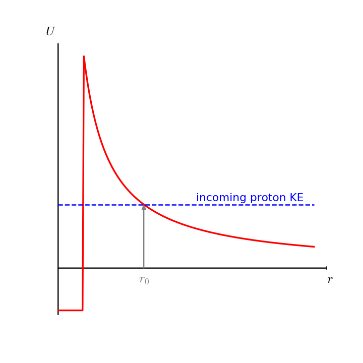

Reaction networks#
General reactions#
Consider the general reaction,
where \(X\) and \(Y\) are typically nuclei and \(a\) and \(b\) are light particles (like \(p\), \(\alpha\), \(n\))
We normally write this in a compact form as \(X(a, b)Y\).
Expectations#
For nuclei to fuse, they need to overcome the Coulomb repulsion and get close enough to fall into the attractive potential well of the strong force, ~ 1 fm.
For example, consider proton fusion. The incoming proton will see a potential of the form:

The kinetic / thermal energy of the nucleus is
and the Coulomb energy is:
where \(Z_1\) and \(Z_2\) are the charges of the nuclei. Equating these gives the classical turning radius, \(r_0\):
This is the classical result. And it would require really high temperatures (like \(\sim 10^{10}~\mathrm{K}\) for p + p).
Quantum mechanics says that there is a probability for the nucleus to tunnel through the barrier,
where \(\lambda\) is the de Broglie wavelength. This lowers the required temperature significantly.
Important
Immediately we see from this that heavier nuclei need higher temperatures to fuse.
Nuclear properties#
We characterize a nucleus with a mass number, \(A\) (the number of protons and neutrons) and a proton number, \(Z\).
In nuclear physics, masses are measured as the atomic mass excess:
where \(m_{AZ}\) is the actual mass and \(m_u\) is the atomic mass unit.
Tip
The standard source for mass excesses is the atomic mass evaluations which are updated every ~ 4 years.
Energy release#
The energy release (or \(Q\)) value is just the difference in masses.
In any reaction, the number of baryons is conserved, so the \(Q\) value is the difference in mass excesses. For our reaction, it is:
Reaction rate#
Imagine an experiment:
A beam of partial \(a\) is shot at a fixed target of \(X\)
Each \(X\) nuclei presents a cross-section for reactions \(\sigma\)
The number of reactions will depend on the amount of \(X\) in the target
The number of reactions / second will also depend on the flux of \(a\)
General form of a rate:
Note
\(r\) has units of # of reactions / volume / time
Notice:
v is the relative velocity between \(X\) and \(a\)
\(\sigma\) will be energy dependent, \(\sigma(v)\)
If \(X\) and \(a\) are the same particle, we divide by two (only care about pairs, not ordering)
There’s a range of velocities
If both \(X\) and \(a\) velocities follow the Maxwell-Boltzmann distribution, then the relative velocity does too.
Define \(\phi(v)\) as M-B distribution (normalized to integrate to 1)
Velocity averaged reaction rate is:
\[r = \frac{n_a n_X}{1 + \delta_{aX}} \int_0^\infty v \sigma(v) \phi(v) dv \equiv \frac{n_a n_X}{1+ \delta_{aX}} \langle \sigma v \rangle\]
Note, all of the nuclear physics is contained in \(\sigma\).
The quantity \(\sigma v\) depends only on temperature.
The evolution of nucleus \(X\) is given as:
where the \(-\) indicates that \(X\) is being destroyed.
Mass and molar fractions#
We define the mass fraction of species \(k\) as:
where \(\rho_k\) is the mass density of species \(k\). Note that by conservation of mass,
We can express the mass density of species \(k\) as:
where \(A_k m_u\) represents the mass of a single nucleus. This then shows that
We define the molar fraction of species \(k\) as:
then we have:
it is common to take \(N_A = 1/m_u\) (in CGS), and write this as:
With this definition, our evolution equation becomes:
Reaction rate libraries typically provide \(N_A \langle \sigma v \rangle\).